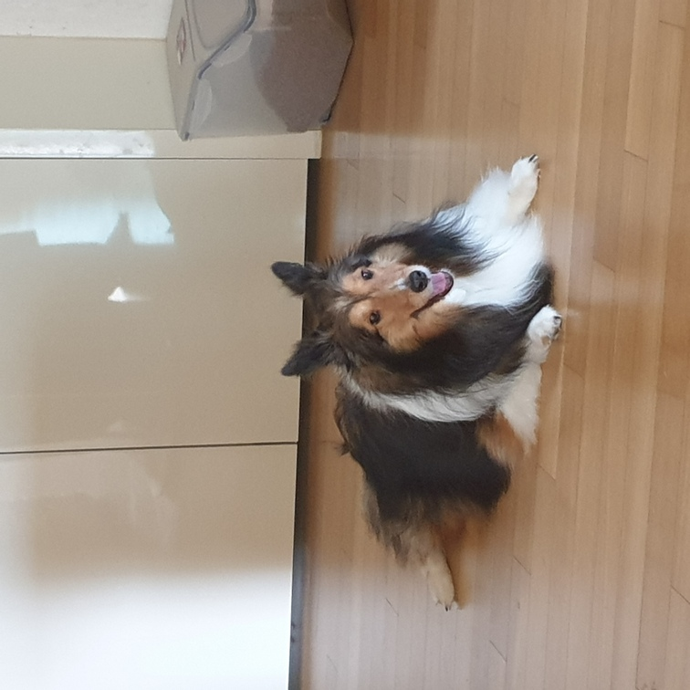

단이에 대하여
[출생] [이름의 유래] [귀여운 점]
출생
단이는 2011년도 7월 14일 태어난것으로 추청된다. 태생지는 금산이다.
추정일 뿐인 이유는 2011년 10월 14일, 3개월이었던 단이를 입양하였기 때문이다.
이름의 유래
눈이 단추구멍만하다는 이유로 이름이 단추가 될 뻔 한적 있다.
그러나 단추라는 이름의 개가 흔했고, 두글자로 부르기 귀찮았던 가족들은 "단~"이라고 불렀고 이후 이름 자체가 단이로 바뀌었다.
내 이름도 그래서 바다가 아니라 해가 되었다는 이야기가 있다....
귀여운 점
01. 날씨가 더워지면 마룻바닥에 붙어 귀를 쫑긋 세운다.
이 상태의 단이를 토끼라고 부른다.
02. 잘 때 혀가 삐쭉 나온다.
귀엽긴 하지만 나이가 들어 이가 빠지다보니 혀가 그대로 나오는것이라 안쓰럽다.